한국사능력검정시험-중급(폐지) (2019-10-27 기출문제)
1. (가)시대의 생활 모습으로 옳은 것은? [1점]
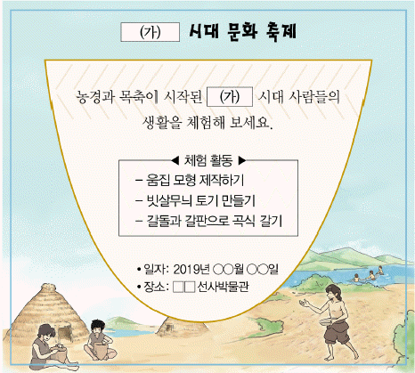
- 우경이 널리 보급되었다.
- 철제 농기구를 이용하였다.
- 거친무늬 거울을 사용하였다.
- 가락바퀴를 사용하여 실을 뽑았다.
- 거푸집을 이용하여 동검을 제작하였다.
(정답률: 86%)

2. 밑줄 그은 ‘이 나라’에 대한 설명으로 옳은 것은? [2점]
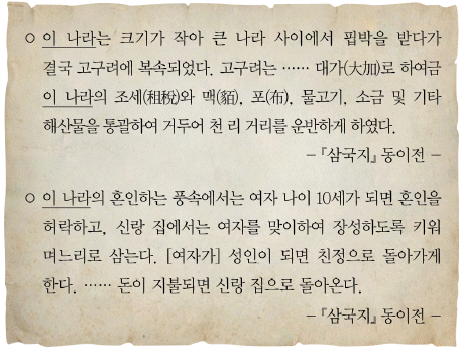
- 영고라는 제천 행사를 거행하였다.
- 화백 회의에서 중요한 일을 결정하였다.
- 여러 가(加)들이 별도로 사출도를 주관하였다.
- 사회 질서를 유지하기 위해 범금 8조를 만들었다.
- 가족의 유골을 한 목곽에 모아 두는 풍습이 있었다.
(정답률: 73%)
3. 밑줄 그은 ‘이 국가’에 대한 설명으로 옳은 것은? [2점]
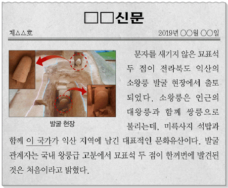
- 22담로를 설치하였다.
- 동북9성을 축조하였다.
- 상수리 제도를 실시하였다.
- 안시성 전투에서 승리하였다.
- 전성기에 해동성국이라 불렸다.
(정답률: 78%)
4. (가) 왕의 정책으로 옳은 것은? [3점]
- 대가야를 정복하였다.
- 천리장성을 축조하였다.
- 9주 5소경을 설치하였다.
- 독서삼품과를 실시하였다.
- 김흠돌의 난을 진압하였다.
(정답률: 73%)
5. 밑줄 그은 ‘이 국가’의 문화유산으로 옳은 것은? [2점]
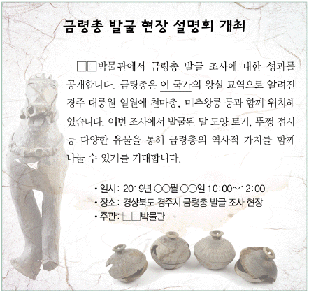
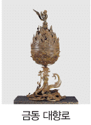
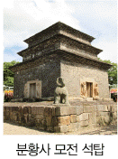
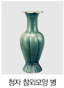
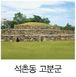
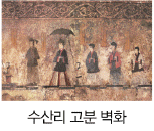
(정답률: 58%)
6. (가)에 들어갈 제도로 옳은 것은? [1점]
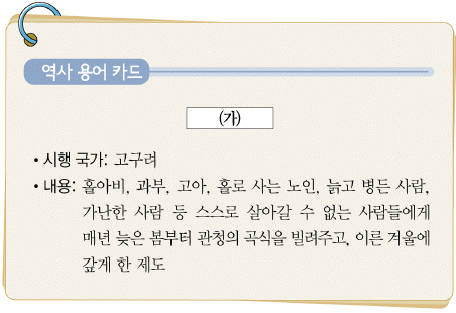
- 골품제
- 진대법
- 직전법
- 호패법
- 호포제
(정답률: 83%)
7. (가), (나) 사이의 시기에 있었던 사실로 옳은 것은? [2점]
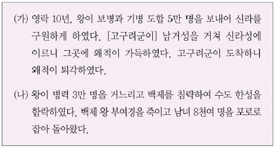
- 신라가 우산국을 정벌하였다.
- 신라가 금관가야를 병합하였다.
- 고구려가 평양으로 천도하였다.
- 백제가 국호를 남부여로 변경하였다.
- 고구려가 전진으로부터 불교를 수용하였다.
(정답률: 65%)
8. (가)~(다)를 일어난 순서대로 옳게 나열한 것은? [3점]
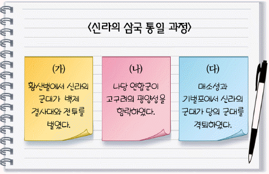
- (가)-(나)-(다)
- (가)-(다)-(나)
- (나)-(가)-(다)
- (나)-(다)-(가)
- (다)-(나)-(가)
(정답률: 65%)
9. 다음 자료를 활용한 탐구 주제로 가장 적절한 것은? [2점]
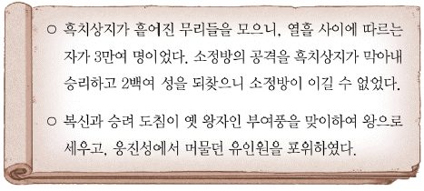
- 발해의 멸망 원인
- 고구려의 영토 확장
- 백제 부흥 운동의 전개
- 신라의 불교 공인 과정
- 전기 가야 연맹의 해체 배경
(정답률: 76%)
10. (가)에 들어갈 내용으로 가장 적절한 것은? [2점]
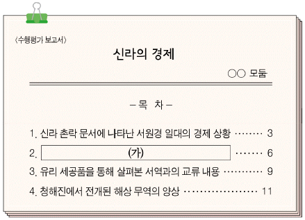
- 관료전 지급과 녹읍 폐지의 목적
- 은병 발행이 물자 유통에 끼친 영향
- 모내기법의 전국적 보급과 생산력 증대
- 연분 9등법 실시 이후 조세 수취 액수의 변화
- 담배 등 상품 작물의 재배와 농가 소득의 향상
(정답률: 66%)
11. 밑줄 그은 ‘왕’의 업적으로 옳은 것은? [2점]
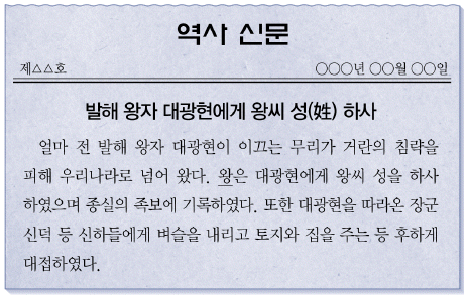
- 후삼국을 통일하였다.
- 별무반을 조직하였다.
- 4군 6진을 개척하였다.
- 노비안검법을 실시하였다.
- 초계문신제를 시행하였다.
(정답률: 64%)
12. (가)에 들어갈 내용으로 옳지 않은 것은? [3점]
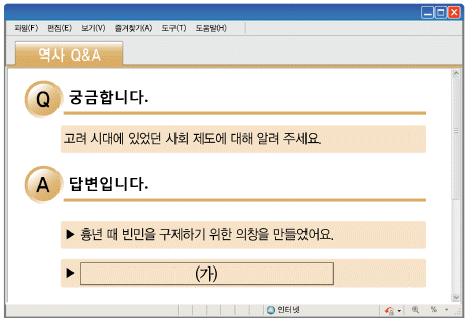
- 물가를 조절하는 기구로 상평창을 두었어요.
- 빈민을 구휼할 목적으로 제위보를 조성했어요.
- 환곡의 폐단을 막기 위해 사창제를 시행했어요.
- 백성들에게 약을 제공하는 혜민국을 설치했어요.
- 질병 확산에 대처하고자 구제도감을 운영했어요.
(정답률: 40%)
13. 다음 답사가 이루어진 지역을 지도에서 옳게 찾은 것은? [1점]
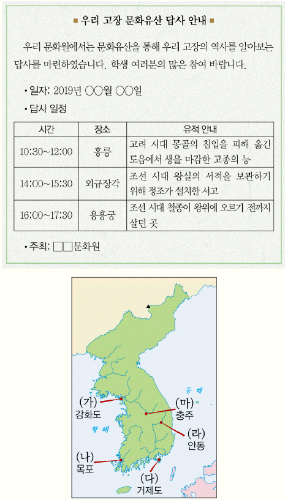
- (가)
- (나)
- (다)
- (라)
- (마)
(정답률: 71%)
14. 다음 자료에 나타난 시기의 경제 모습으로 옳은 것은? [3점]
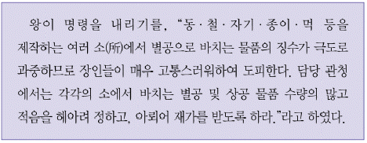
- 상평통보가 널리 유통되었다.
- 이앙법이 전국적으로 확산되었다.
- 벽란도가 국제 무역항으로 번성하였다.
- 덕대가 광산을 전문적으로 경영하였다.
- 독점적 도매상인인 도고가 성장하였다.
(정답률: 56%)
15. (가) 시기에 있었던 사실로 옳은 것은? [2점]
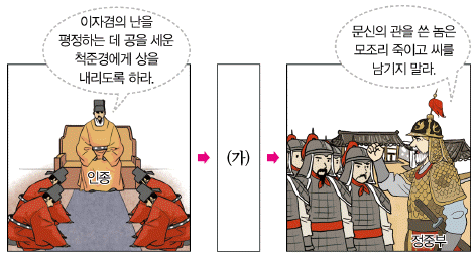
- 최영이 요동 정벌을 추진하였다.
- 묘청이 서경에서 난을 일으켰다.
- 홍경래가 평안도에서 봉기하였다.
- 최승로가 시무 28조를 건의하였다.
- 김윤후가 처인성에서 몽골군을 물리쳤다.
(정답률: 67%)
16. (가)에 들어갈 내용으로 옳은 것은? [2점]
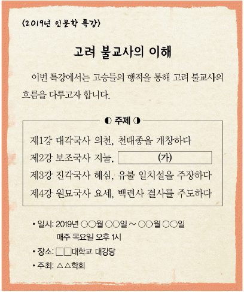
- 불국사를 건립하다
- 삼국유사를 편찬하다
- 수선사 결사를 제창하다
- 화엄일승법계도를 남기다
- 왕오천축국전을 저술하다
(정답률: 57%)
17. 밑줄 그은 ‘이것’에 대한 설명으로 옳은 것은? [2점]
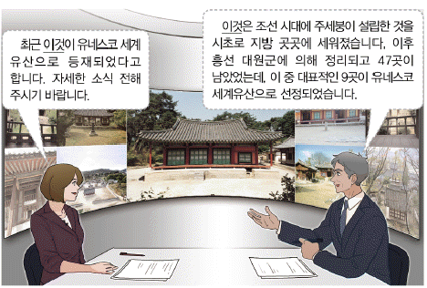
- 의학 교육을 관장하였다.
- 중앙에서 훈도가 파견되었다.
- 선현의 제사와 성리학 교육을 담당하였다.
- 유학부와 기술학부를 편성하여 교육하였다.
- 외국어 통역관 양성을 주된 목적으로 삼았다.
(정답률: 66%)
18. (가)에 들어갈 문화유산으로 옳은 것은? [1점]
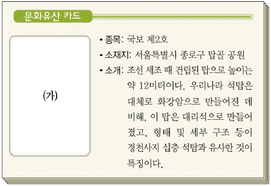
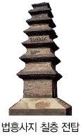
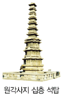
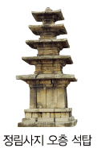
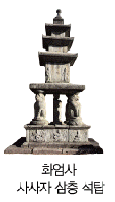
(정답률: 66%)
19. 밑줄 그은 ‘이 전쟁’중에 있었던 사실로 옳은 것은? [2점]
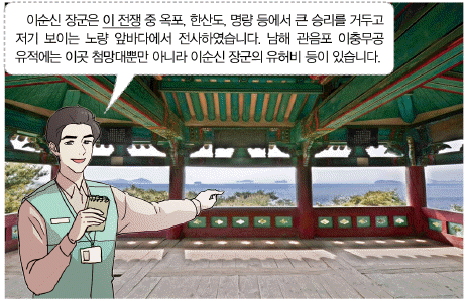
- 임경업이 백마산성에서 항전하였다.
- 강감찬이 귀주에서 대승을 거두었다.
- 을지문덕이 살수에서 적군을 물리쳤다.
- 최무선이 진포에서 왜구를 격퇴하였다.
- 권율이 행주산성에서 크게 승리하였다.
(정답률: 69%)
20. (가)에 들어갈 세시 풍속으로 가장 적절한 것은? [2점]
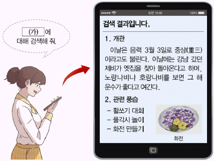
- 설날
- 단오
- 동지
- 삼짇날
- 한가위
(정답률: 71%)
21. 다음 대화에서 공통으로 다루고 있는 군사 조직으로 옳은 것은? [1점]
- 금위영
- 별기군
- 장용영
- 진위대
- 훈련도감
(정답률: 61%)
22. (가) 제도에 대한 설명으로 옳은 것은? [2점]
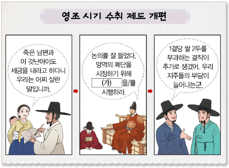
- 군포 납부액을 1필로 정하였다.
- 전지와 시지를 품계에 따라 지급하였다.
- 전세를 토지 1결당 4~6두로 고정하였다.
- 지계아문을 설치하여 지계를 발급하였다.
- 토지를 비옥도에 따라 6등급으로 나누었다.
(정답률: 52%)
23. 밑줄 그은 ‘봉기’에 대한 정부의 대책으로 옳은 것은? [2점]
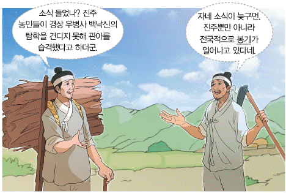
- 집강소를 두었다.
- 소격서를 폐지하였다.
- 과전법을 실시하였다.
- 삼정이정청을 설치하였다.
- 전민변정도감을 운영하였다.
(정답률: 47%)
24. 밑줄 그은 ‘이 지도’에 대한 설명으로 옳은 것은? [2점]
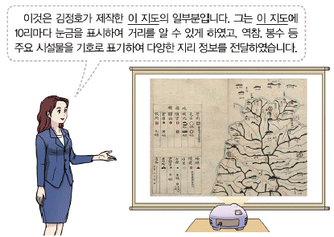
- 최초로 100리 척이 적용되었다.
- 총 22첩의 목판본으로 제작되었다.
- 유네스코 세계기록유산으로 등재되었다.
- 각 지방의 산천, 인물, 풍속 등이 담겨 있다.
- 우리나라에서 제작된 현존 최고(最古)의 세계 지도이다.
(정답률: 48%)
25. (가)에 들어갈 내용으로 옳은 것은? [2점]
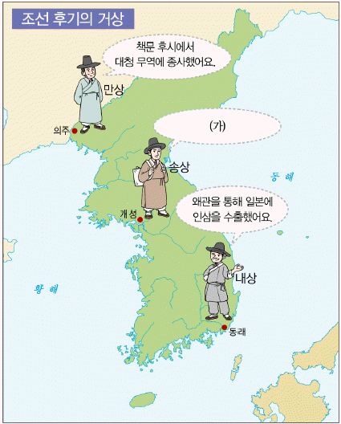
- 제물포에 세창 양행을 세웠어요
- 황국 중앙 총상회 설립을 주도했어요
- 선혜청의 대동미 징수 업무를 담당했어요
- 전국 각지에 송방이라는 지점을 설치했어요
- 개항장 10리 이내에서만 상거래를 할 수 있었어요
(정답률: 61%)
26. (가)인물에 대한 설명으로 옳은 것은? [3점]
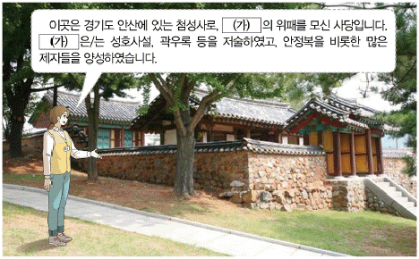
- 사상 의학을 정립하였다.
- 거중기와 배다리를 등용되었다.
- 규장각 검서관으로 등용되었다.
- 북한산비가 진흥왕 순수비임을 밝혔다.
- 영업전 매매를 금지하는 한전론을 제시하였다.
(정답률: 36%)
27. (가) 종교에 대한 설명으로 옳은 것은? [2점]
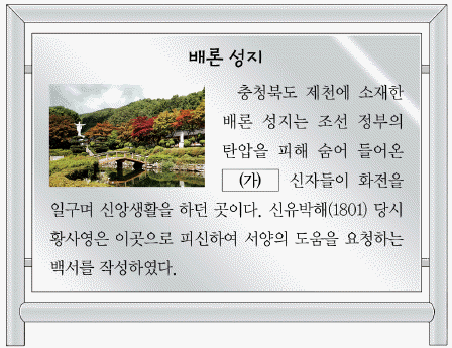
- 기관지로 만세보를 발간하였다.
- 미륵불이 세상을 구원한다고 예언하였다.
- 하늘에 제사를 지내는 초제를 거행하였다.
- 단군 숭배 사상을 통하여 민족의식을 높였다.
- 중국에 다녀온 사신들에 의해 서학으로 소개되었다.
(정답률: 66%)
28. 다음 가상 뉴스에서 보도하고 있는 사건이 일어난 시기를 연표에서 옳게 고른 것은? [2점]
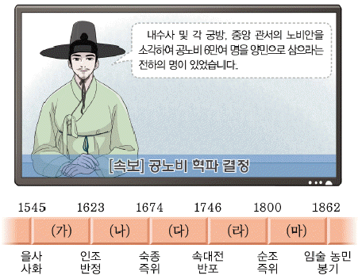
- (가)
- (나)
- (다)
- (라)
- (마)
(정답률: 37%)
29. (가)에 들어갈 작품으로 옳은 것은? [1점]
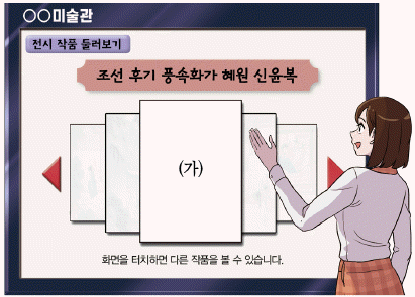
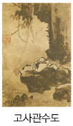
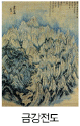
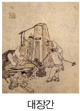
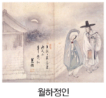
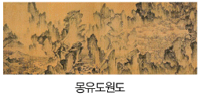
(정답률: 62%)
30. 밑줄 그은 ‘사절단’에 대한 설명으로 옳은 것은? [3점]
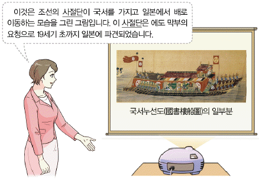
- 동지사, 정조사, 성절사 등이 있었다.
- 다녀온 후 기록을 연행록으로 남겼다.
- 해국도지, 영환지략을 국내에 소개하였다.
- 시문, 서화 등을 통해 문화 교류를 하였다.
- 기기국에서 무기 제조 기술을 습득하고 돌아왔다.
(정답률: 36%)
31. 다음 상황이 전개된 배경으로 옳은 것을 <보기>에서 고른 것은? [2점]
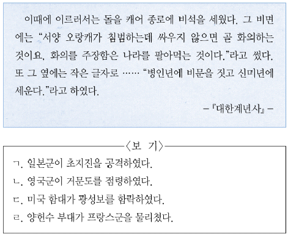
- ㄱ,ㄴ
- ㄱ,ㄷ
- ㄴ,ㄷ
- ㄴ,ㄹ
- ㄷ,ㄹ
(정답률: 56%)
32. (가)에 들어갈 인물로 옳은 것은? [1점]
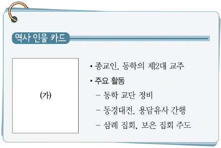
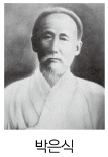
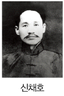
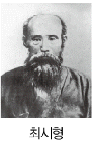
(정답률: 57%)
33. 밑줄 그은 ‘개혁’의 내용으로 옳은 것은? [2점]
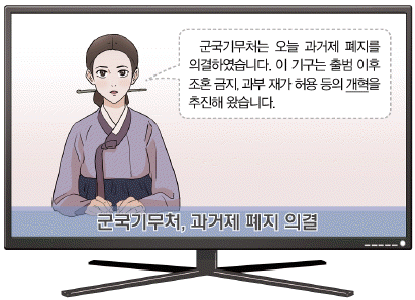
- 신분제를 폐지하였다.
- 비변사를 혁파하였다.
- 단발령을 시행하였다.
- 당백전을 발행하였다.
- 원수부를 설치하였다.
(정답률: 60%)
34. (가) 인물의 활동으로 옳은 것은? [2점]
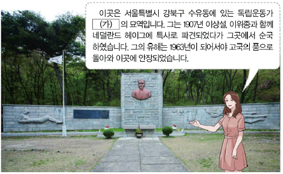
- 대종교를 창시하였다.
- 영남 만인소를 주도하였다.
- 한국독립운동지혈사를 저술하였다.
- 친일 미국인 스티븐스를 사살하였다.
- 을사늑약 체결의 불법성을 폭로하였다.
(정답률: 62%)
35. 민줄 그은 ‘이 부대’의 활동으로 옳은 것은? [3점]
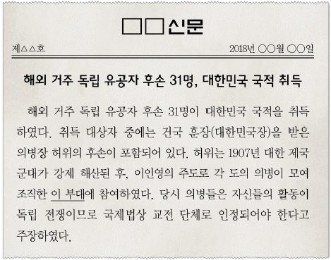
- 독립 공채를 발행하였다.
- 서울 진공 작전을 전개하였다.
- 공화정 수립을 목표로 하였다.
- 국채 보상 운동을 추친하였다.
- 정부에 헌의 6조를 건의하였다.
(정답률: 53%)
36. (가)에 해당하는 단체로 옳은 것은? [1점]
- 신민회
- 서북 학회
- 헌정 연구회
- 북로 군정서
- 대한 광복군 정부
(정답률: 65%)
37. 밑줄 그은 ‘이 신문’으로 옳은 것은? [2점]
(정답률: 56%)
38. (가), (나) 조약 체결 사이의 시기에 있었던 사실로 옳은 것은? [3점]
- 임오군란이 일어났다.
- 명성 황후가 피살되었다.
- 만민 공동회가 개최되었다.
- 고종이 강제로 퇴위되었다.
- 통리기무아문이 설치되었다.
(정답률: 48%)
39. (가)에 들어갈 단체로 옳은 것은? [1점]
- 근우회
- 보안회
- 독립 협회
- 대한 광복회
- 조선 형평사
(정답률: 43%)
40. 밑줄 그은 ‘이 학교’로 옳은 것은? [2점]
- 동문학
- 명동 학교
- 배재 학당
- 육영 공원
- 이화 학당
(정답률: 41%)
41. (가) 단체의 활동으로 옳은 것은? [2점]
- 이토 히로부미를 사살하였다.
- 물산 장려 운동을 추진하였다.
- 홍커우 공원에서 폭탄을 투척하였다.
- 암태도에서 소작 쟁의를 전개하였다.
- 러시아의 절영도 조차 요구를 저지하였다.
(정답률: 63%)
42. (가) 민족 운동에 대한 설명으로 옳은 것은? [2점]
- 대한매일신보의 후원으로 확산되었다.
- 순종의 인산일을 기회로 삼아 일어났다.
- 신간회가 조사단을 파견하여 지원하였다.
- 독립문 건립을 위한 모금 활동을 전개하였다.
- 일제가 이른바 문화 통치를 실시하는 계기가 되었다.
(정답률: 67%)
43. (가) 독립군 부대에 대한 설명으로 옳은 것은? [2점]
- 홍범도의 지휘 아래 활동하였다.
- 자유시 참변으로 세력이 약화되었다.
- 청산리에서 일본군을 크게 격파하였다.
- 인도ㆍ미얀마 전선에 대원을 투입하였다.
- 쌍성보, 대전자령 전투에서 승리를 거두었다.
(정답률: 44%)
44. 다음 자료가 발행된 시기를 연표에서 옳게 고른 것은? [2점]
- (가)
- (나)
- (다)
- (라)
- (마)
(정답률: 46%)
45. (가)~(다) 학생이 발표한 내용을 일어난 순서대로 옳게 나열한 것은? [3점]
- (가)-(나)-(다)
- (가)-(다)-(나)
- (나)-(가)-(다)
- (나)-(다)-(가)
- (다)-(나)-(가)
(정답률: 41%)
46. 다음 퀴즈의 정답으로 옳은 것은? [1점]
- (가)
- (나)
- (다)
- (라)
- (마)
(정답률: 41%)
47. (가) 기구에 대한 설명으로 옳은 것은? [3점]
- 미군정 시기에 조직되었다.
- 여운형이 위원장을 맡았다.
- 정우회 선언을 발표하였다.
- 좌ㆍ우 합작 운동을 전개하였다.
- 법안 개정으로 활동 기간이 단축되었다.
(정답률: 36%)
48. (가) 전쟁 중에 있었던 사실로 옳지 않은 것은? [2점]
- 판문점에서 휴전 회담이 진행되었다.
- 조선 건국 준비 위원회가 조직되었다.
- 중국군의 개입으로 서울을 다시 빼앗겼다.
- 학도병이 낙동강 전선에서 혈전을 치렀다.
- 국군과 유엔군이 인천 상륙 작전에 성공하였다.
(정답률: 56%)
49. 다음 담화문이 발표된 정부 시기에 있었던 사실로 옳은 것은? [2점]
- 소련 및 중국과 수교하였다.
- 남북 정상 회담을 개최하였다.
- 4ㆍ13 호헌 조치를 발표하였다.
- 금융 실명제를 전면 실시하였다.
- 베트남 전쟁에 한국군을 파병하였다.
(정답률: 48%)
50. (가) 민주화 운동에 대한 설명으로 옳은 것은? [2점]
- 장면 내각이 출범하는 배경이 되었다.
- 진상 규명을 위한 특별법이 제정되었다.
- 박종철 고문치사 사건을 계기로 일어났다.
- 이승만 대통령이 하야하는 결과를 가져왔다.
- 호헌 철폐와 독재 타도 등의 구호를 내세웠다.
(정답률: 26%)